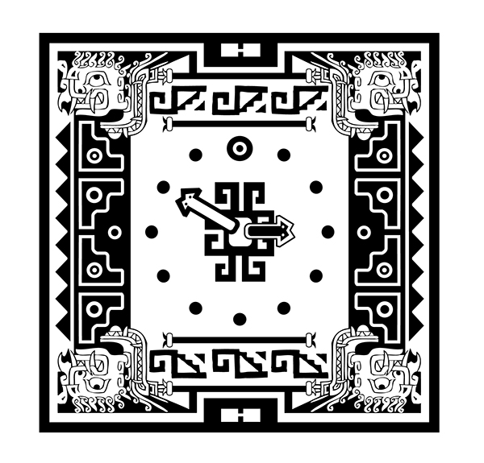
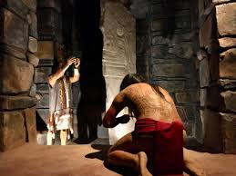
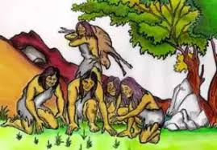

Cultura de la Civilización Chavín
La cultura Chavín, que floreció en los Andes del Perú, dejó un legado importante en diversas áreas, marcando un horizonte cultural significativo.
| Aspecto Cultural | Descripción |
|---|---|
| Arte e Iconografía | Se caracteriza por la representación de seres sobrenaturales con rasgos de felinos, aves y serpientes. Estas imágenes se encuentran en esculturas líticas, cerámica y textiles, con una fuerte carga simbólica y religiosa. |
| Religión y Cosmovisión | Su religión era compleja, centrada en deidades poderosas y rituales elaborados. Chavín de Huántar fue un importante centro ceremonial y de peregrinación, lo que sugiere una influencia religiosa extendida. |
| Organización Social y Política | Aunque los detalles precisos son debatidos, se cree que existía una sociedad jerarquizada con una élite sacerdotal que ejercía poder y control sobre la población, posiblemente a través del prestigio religioso. |
| Agricultura y Tecnología | Desarrollaron técnicas agrícolas avanzadas para la época, como la irrigación, que les permitió sustentar una población creciente. También trabajaron la metalurgia de forma temprana, aunque principalmente con fines ornamentales. |



La influencia de la cultura Chavín se extendió a través de gran parte del territorio peruano, evidenciando la fuerza de sus ideas y su desarrollo cultural.